Data Visualization with ggplot
Objectives
- Learn the essential parts of the
ggplot2“grammar of graphics”:- Map variables from the data to aesthetics (x, y, color, fill, size,
etc.) via
aes(). - Plot those mappings with geometries via
geom_*(). - Adjust numeric and categorical scales via
scale_*(). - Use a variable to visually stratify data via
facet_*().
- Map variables from the data to aesthetics (x, y, color, fill, size,
etc.) via
- Learn how to customize plots by:
- Changing color and fill with the RColorBrewer package.
- Altering text and formatting of axis labels and legends.
Exploring data visually
We have learned how to use functions from the tidyverse
to subset and summarize data, along with some of the equivalent base R
functions. But all of our manipulations have lacked the visual component
that can be so helpful in understanding the properties of data,
i.e. distributions, outliers, trends, etc. Let’s turn our attention to
plotting in the tidyverse with ggplot2.
The intellectual framework for ggplot2 comes from the
“Grammar of Graphics” by Wilkinson (ref).
This module will introduce the components of that grammar, and how to
combine them into publication-ready plots.
Loading data
In the previous lesson we used the read_csv() function
to load the gm97 data. Let’s do that again:
library(tidyverse)
gm97 = read_csv('data/gapminder_1997.csv')Rows: 142 Columns: 6
── Column specification ────────────────────────────────────────────────────────────────────
Delimiter: ","
chr (2): country, continent
dbl (4): year, pop, lifeExp, gdpPercap
ℹ Use `spec()` to retrieve the full column specification for this data.
ℹ Specify the column types or set `show_col_types = FALSE` to quiet this message.Mappings, aesthetics, and geometries
Let’s jump right in and create our first plot using the
ggplot() function. Along the way we’ll discuss the
components of a plot, and how ggplot2 conceptualizes
plotting.
ggplot(data = gm97)When we ran this code the Plots tab popped up and displayed … a gray
rectangle. This is underwhelming as a first plot, but it’s a helpful
reminder that computers do exactly what we tell them. In this case,
we’ve just told R that we want to plot data from gm97. We
haven’t told it how.
The elements of a plot have properties like: x and y position, size,
color, etc. These properties are aesthetics, and we
need to map variables in our dataset to aesthetics in our plot. This is
done with the aesthetic mapping function aes(). Let’s build
up our plot iteratively by mapping gdpPercap to the x-axis
with:
ggplot(data = gm97) +
aes(x = gdpPercap)In ggplot2, the + indicates we want to add
elements to a plot; it’s kind of like the pipe (%>%) in
dplyr. Our plot window is no longer a blank gray square,
but now has a labeled x-axis with visual delimiters. Here,
gdpPercap is just the column name from our data, and isn’t
really formatted in a “publication-ready” manner. We can use the
labs() function to alter the label on the x-axis with:
ggplot(data = gm97) +
aes(x = gdpPercap) +
labs(x = 'GDP Per Capita')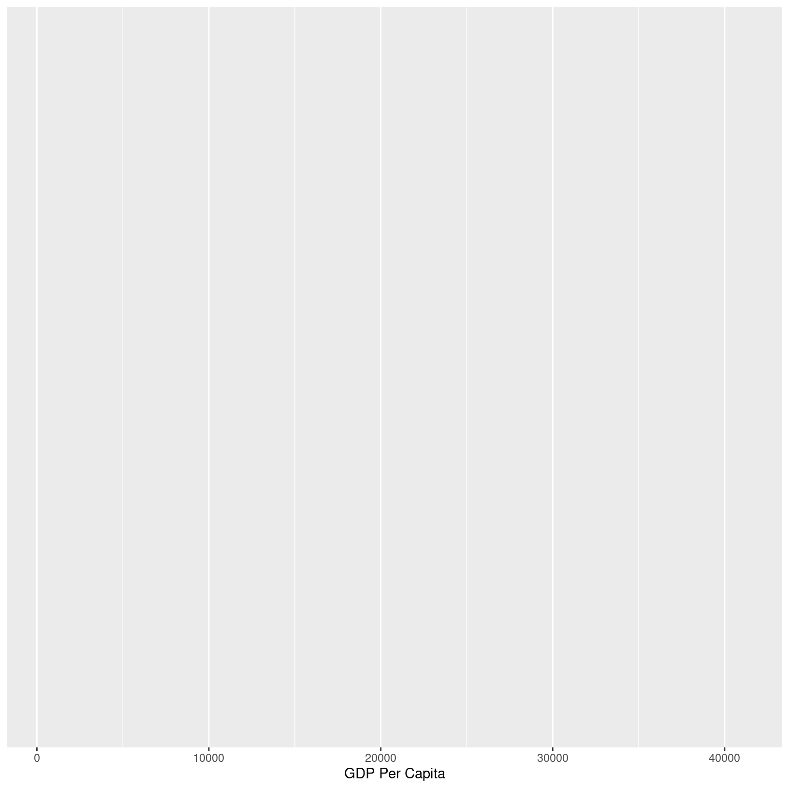
Checkpoint
Exercise
How would we map life expectancy to the y-axis and give it a nicer label?
ggplot(data = gm97) + aes(x = gdpPercap) + labs(x = 'GDP Per Capita') + aes(y = lifeExp) + labs(y = 'Life Expectancy')
This is progress, but we still don’t have any data plotted. For this,
we tell the plot object what to draw by adding a
geometry (or geom for short). There are
many geometries, but we’ll begin with geom_point(), which
plots points in the x-y plane.
ggplot(data = gm97) +
aes(x = gdpPercap) +
labs(x = 'GDP Per Capita') +
aes(y = lifeExp) +
labs(y = 'Life Expectancy') +
geom_point()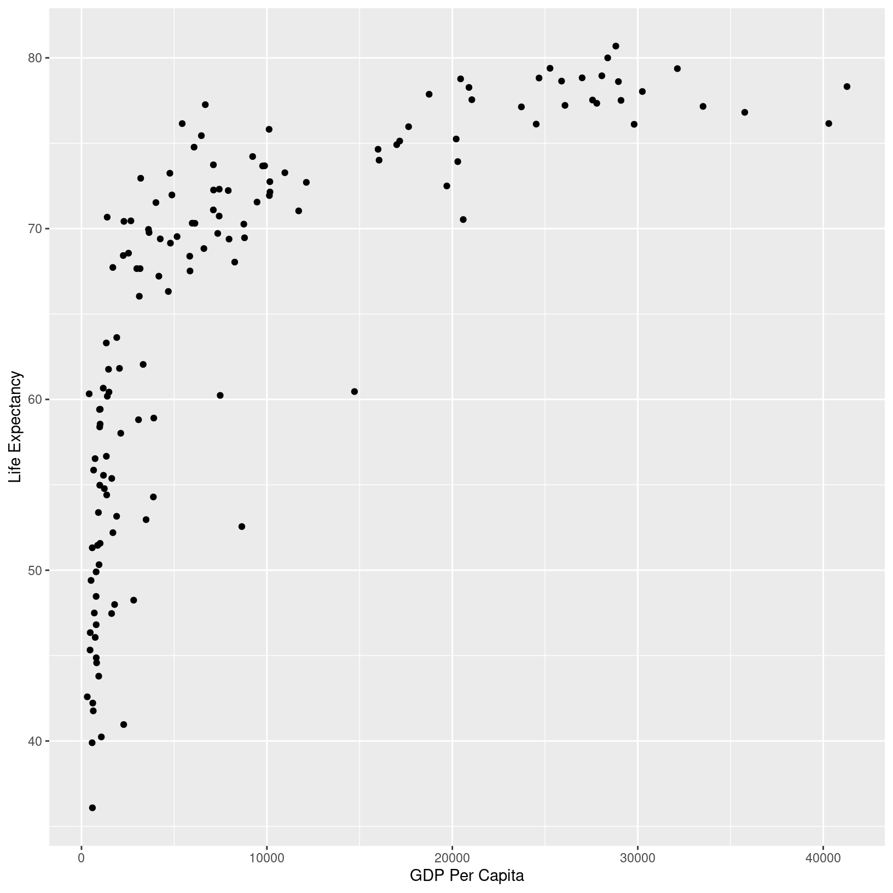
From the plot, it appears that higher GDP correlates with longer life
expectancy. We can add a title to the plot with labs() to
suggest this is the point of the plot:
ggplot(data = gm97) +
aes(x = gdpPercap) +
labs(x = 'GDP Per Capita') +
aes(y = lifeExp) +
labs(y = 'Life Expectancy') +
geom_point() +
labs(title = 'Do people in wealthier countries live longer?')Checkpoint
Color
We’ve made excellent progress on our first plot, and without even having to write very much code! There is much more we can do visually to understand what the data might be telling us in addition to the general trend we’ve already observed. For example, we can use different colors for each continent to understand how continent affects this relationship:
ggplot(data = gm97) +
aes(x = gdpPercap) +
labs(x = 'GDP Per Capita') +
aes(y = lifeExp) +
labs(y = 'Life Expectancy') +
geom_point() +
labs(title = 'Do people in wealthier countries live longer?') +
aes(color = continent)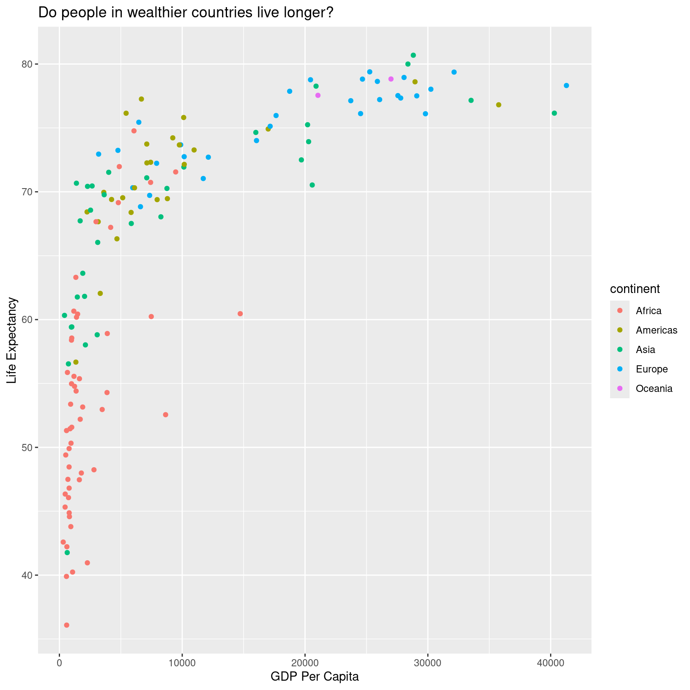
With the continents shown by color, we immediately pick out that African countries tend to have lower life expectancy than other countries. Of course, there are African countries (red points) with life expectancies similar to wealthier countries, suggesting that GDP per capita does not tell the full story about health, as we might have already guessed.
Checkpoint
Scale
When we added the color mapping, ggplot added a legend automatically,
assigning different colors to each of the unique values of
continent. The colors ggplot uses are considered a “scale,”
and each aesthetic value we can give (x, y, color, etc) has a
corresponding scale. Let’s experiment with a different numerical scale
to see how that works.
ggplot(data = gm97) +
aes(x = gdpPercap) +
labs(x = 'GDP Per Capita') +
aes(y = lifeExp) +
labs(y = 'Life Expectancy') +
geom_point() +
labs(title = 'Do people in wealthier countries live longer?') +
aes(color = continent) +
scale_x_log10()Here we see that the x-axis has been scaled by the log10. Depending
on the data we’re plotting the log scale might be more appropriate than
the default linear scale. We can also change the scale on the
continent mapping to change the colors:
ggplot(data = gm97) +
aes(x = gdpPercap) +
labs(x = 'GDP Per Capita') +
aes(y = lifeExp) +
labs(y = 'Life Expectancy') +
geom_point() +
labs(title = 'Do people in wealthier countries live longer?') +
aes(color = continent) +
scale_color_brewer(palette = 'Set2')In this case, Set2 palette is color-blind friendly.
There are many built-in palettes:
RColorBrewer::display.brewer.all()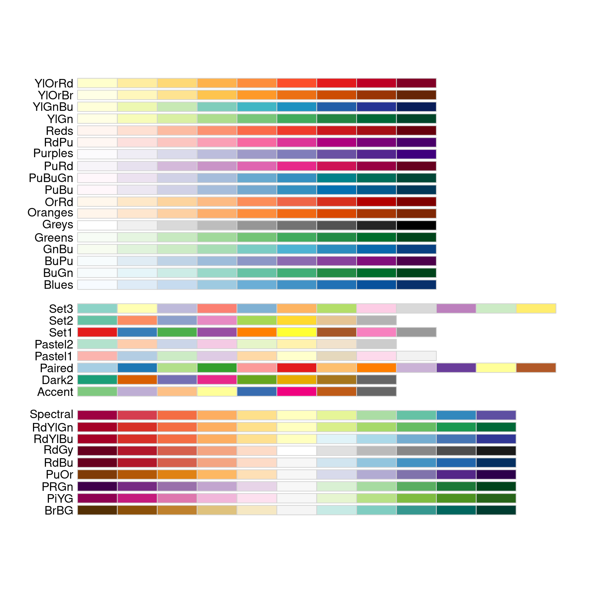
Note that there are linear color scales which might be appropriate
for numerical data with a minimum value of 0 (top group). There are also
discrete color scales more appropriate for categorical data that aren’t
associated with magnitude, like continent (middle group).
There are also divergent color scales that might be useful for
continuous variables centered around 0 (bottom group).
Additionally, we can view attributes of the palettes, including which are color-blind friendly, with:
RColorBrewer::brewer.pal.info maxcolors category colorblind
BrBG 11 div TRUE
PiYG 11 div TRUE
PRGn 11 div TRUE
PuOr 11 div TRUE
RdBu 11 div TRUE
RdGy 11 div FALSE
RdYlBu 11 div TRUE
RdYlGn 11 div FALSE
Spectral 11 div FALSE
Accent 8 qual FALSE
Dark2 8 qual TRUE
Paired 12 qual TRUE
Pastel1 9 qual FALSE
Pastel2 8 qual FALSE
Set1 9 qual FALSE
Set2 8 qual TRUE
Set3 12 qual FALSE
Blues 9 seq TRUE
BuGn 9 seq TRUE
BuPu 9 seq TRUE
GnBu 9 seq TRUE
Greens 9 seq TRUE
Greys 9 seq TRUE
Oranges 9 seq TRUE
OrRd 9 seq TRUE
PuBu 9 seq TRUE
PuBuGn 9 seq TRUE
PuRd 9 seq TRUE
Purples 9 seq TRUE
RdPu 9 seq TRUE
Reds 9 seq TRUE
YlGn 9 seq TRUE
YlGnBu 9 seq TRUE
YlOrBr 9 seq TRUE
YlOrRd 9 seq TRUEThe RColorBrewer package is an excellent package for its ready-made palettes, as well as the ability to create custom palettes. See
Checkpoint
Size
We also have the population data for each country and we might wonder
if population has an effect on life expectancy and GDP per capita. We
can map pop to the size of the points in the plot by adding
another aes(). If there was a relationship, we might expect
to see larger points concentrated in certain regions of the resulting
graph.
Exercise
Given our previous code mapping data columns to the axes and to color, what would we add to the previous plot code to map the population to the
sizeaesthatic?ggplot(data = gm97) + aes(x = gdpPercap) + labs(x = 'GDP Per Capita') + aes(y = lifeExp) + labs(y = 'Life Expectancy') + geom_point() + labs(title = 'Do people in wealthier countries live longer?') + aes(color = continent) + scale_color_brewer(palette = 'Set1') + aes(size = pop)
Here ggplot has created another legend for us called
pop, the name of the column, and it shows the size related
to the population. However, this is in scientific notation, which is a
little difficult to interpret at a glance. We can change this by
dividing all the population values by 1,000,000. We can also change the
labels of the legend using the labs() function, just as we
did for the x and y axes and title.
ggplot(data = gm97) +
aes(x = gdpPercap) +
labs(x = 'GDP Per Capita') +
aes(y = lifeExp) +
labs(y = 'Life Expectancy') +
geom_point() +
labs(title = 'Do people in wealthier countries live longer?') +
aes(color = continent) +
scale_color_brewer(palette = 'Set1') +
labs(color = 'Continent') +
aes(size = pop/1000000) +
labs(size = 'Population (in millions)')
From this plot, it doesn’t look like population has much to do with
either life expectancy or GDP per capita. Notice in the
aes() with size we divided the
pop column by 1,000,000. This works because columns in
aesthetic mappings can be treated just like any other variable, and we
can use functions to transform or change them at plot time rather than
transforming the data first. We will see later that for more complex
transformations, it can be advantageous to transform the data first and
build a plot based on the transformed data rather than doing it at plot
time.
Checkpoint
Compact code
In this lesson we have built our plot up line by line and accumulated many lines of code. Many of these steps can be combined to make the code a bit more compact and readable:
ggplot(data = gm97) +
aes(x = gdpPercap, y = lifeExp, color = continent, size = pop/1000000) +
geom_point() +
scale_color_brewer(palette = 'Set1') +
labs(x = 'GDP Per Capita', y = 'Life Expectancy', color = 'Continent', size = 'Population (in millions)',
title = 'Do people in wealthier countries live longer?')Checkpoint
Exploring more complex data
The gm97 has been useful for exploring
dplyr and ggplot functions. Let’s load in a
more complex dataset so we have a bit more data to explore. The
data/gapmainder_data.csv dataset is similar to
gm97, but is longitudinal. The first step is to load in the
data.
gm = read_csv('data/gapminder_data.csv')Rows: 1704 Columns: 6
── Column specification ────────────────────────────────────────────────────────────────────
Delimiter: ","
chr (2): country, continent
dbl (4): year, pop, lifeExp, gdpPercap
ℹ Use `spec()` to retrieve the full column specification for this data.
ℹ Specify the column types or set `show_col_types = FALSE` to quiet this message.Let’s look at a preview of the data and explore some functions to see its attributes. First, we can preview it by evaluating a line of code which just names the object:
gm# A tibble: 1,704 × 6
country year pop continent lifeExp gdpPercap
<chr> <dbl> <dbl> <chr> <dbl> <dbl>
1 Afghanistan 1952 8425333 Asia 28.8 779.
2 Afghanistan 1957 9240934 Asia 30.3 821.
3 Afghanistan 1962 10267083 Asia 32.0 853.
4 Afghanistan 1967 11537966 Asia 34.0 836.
5 Afghanistan 1972 13079460 Asia 36.1 740.
6 Afghanistan 1977 14880372 Asia 38.4 786.
7 Afghanistan 1982 12881816 Asia 39.9 978.
8 Afghanistan 1987 13867957 Asia 40.8 852.
9 Afghanistan 1992 16317921 Asia 41.7 649.
10 Afghanistan 1997 22227415 Asia 41.8 635.
# ℹ 1,694 more rowsCheckpoint
Again, the tibble provides a nice preview of the data
along with many of the attributes including the dimensions and types of
columns. There are some functions we can use to determine these
attributes on their own:
dim(gm)[1] 1704 6This gives us the number of rows and columns, respectively.
head(gm)# A tibble: 6 × 6
country year pop continent lifeExp gdpPercap
<chr> <dbl> <dbl> <chr> <dbl> <dbl>
1 Afghanistan 1952 8425333 Asia 28.8 779.
2 Afghanistan 1957 9240934 Asia 30.3 821.
3 Afghanistan 1962 10267083 Asia 32.0 853.
4 Afghanistan 1967 11537966 Asia 34.0 836.
5 Afghanistan 1972 13079460 Asia 36.1 740.
6 Afghanistan 1977 14880372 Asia 38.4 786.tail(gm)# A tibble: 6 × 6
country year pop continent lifeExp gdpPercap
<chr> <dbl> <dbl> <chr> <dbl> <dbl>
1 Zimbabwe 1982 7636524 Africa 60.4 789.
2 Zimbabwe 1987 9216418 Africa 62.4 706.
3 Zimbabwe 1992 10704340 Africa 60.4 693.
4 Zimbabwe 1997 11404948 Africa 46.8 792.
5 Zimbabwe 2002 11926563 Africa 40.0 672.
6 Zimbabwe 2007 12311143 Africa 43.5 470.The head() and tail() functions display the
first and last few rows of an object, respectively. There is also a
useful function called “structure”, str(), which displays
the structure of an object. This is especially useful when we don’t know
what an object contains.
str(gm)spc_tbl_ [1,704 × 6] (S3: spec_tbl_df/tbl_df/tbl/data.frame)
$ country : chr [1:1704] "Afghanistan" "Afghanistan" "Afghanistan" "Afghanistan" ...
$ year : num [1:1704] 1952 1957 1962 1967 1972 ...
$ pop : num [1:1704] 8425333 9240934 10267083 11537966 13079460 ...
$ continent: chr [1:1704] "Asia" "Asia" "Asia" "Asia" ...
$ lifeExp : num [1:1704] 28.8 30.3 32 34 36.1 ...
$ gdpPercap: num [1:1704] 779 821 853 836 740 ...
- attr(*, "spec")=
.. cols(
.. country = col_character(),
.. year = col_double(),
.. pop = col_double(),
.. continent = col_character(),
.. lifeExp = col_double(),
.. gdpPercap = col_double()
.. )
- attr(*, "problems")=<externalptr> This is similar to information we see in the tibble
preview. We see the type of object, dimensions, columns, their type, and
a preview of their values. Of course, the summary()
function works just the same as it did for gm97, and it’s a
good idea to take a peek and see what the range of the data are:
Checkpoint
summary(gm) country year pop continent
Length:1704 Min. :1952 Min. :6.001e+04 Length:1704
Class :character 1st Qu.:1966 1st Qu.:2.794e+06 Class :character
Mode :character Median :1980 Median :7.024e+06 Mode :character
Mean :1980 Mean :2.960e+07
3rd Qu.:1993 3rd Qu.:1.959e+07
Max. :2007 Max. :1.319e+09
lifeExp gdpPercap
Min. :23.60 Min. : 241.2
1st Qu.:48.20 1st Qu.: 1202.1
Median :60.71 Median : 3531.8
Mean :59.47 Mean : 7215.3
3rd Qu.:70.85 3rd Qu.: 9325.5
Max. :82.60 Max. :113523.1 We see the same columns as gm97 but we notice that there
are many more years of data collected than just 1997. Let’s jump right
in with a plot to understand what this data looks like. And let’s begin
with something similar to the scatterplot we did for gm97,
but include the year.
ggplot(data = gm) +
aes(x = year, y = lifeExp, color = continent) +
geom_point()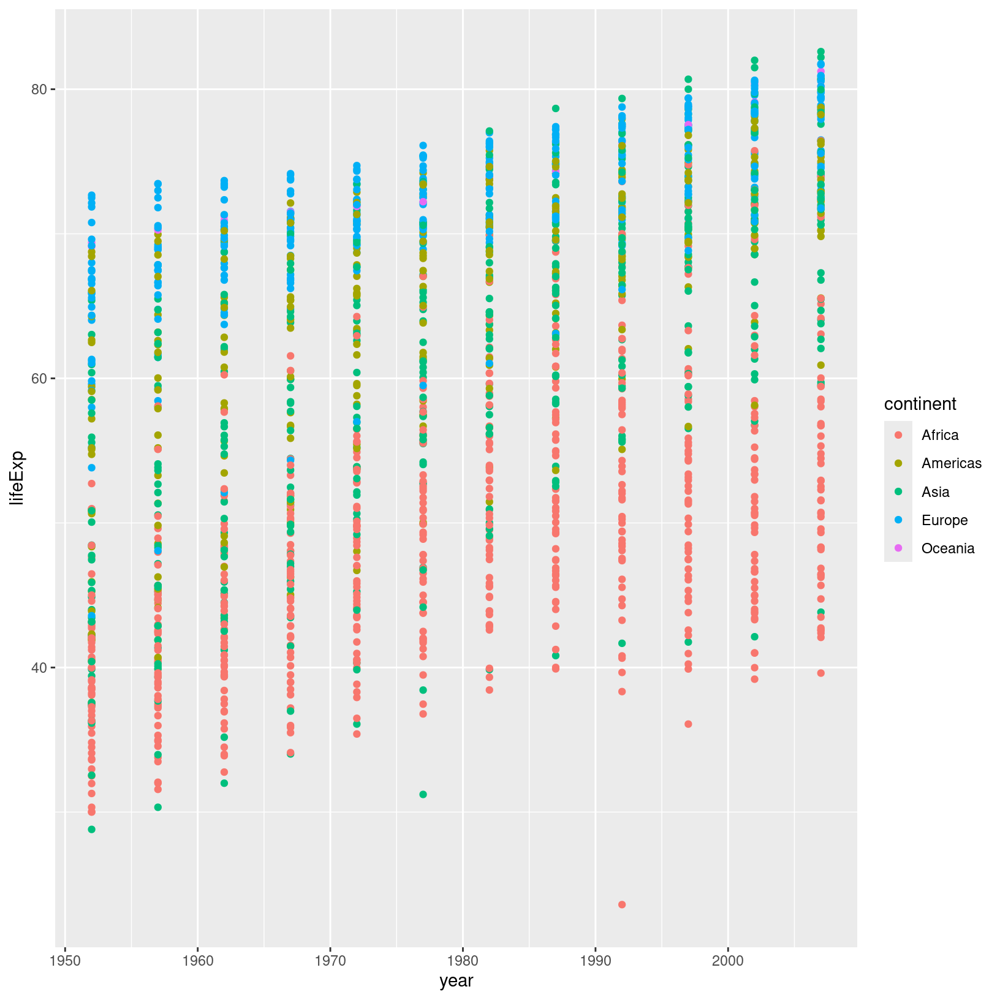
There seems to be an overall trend of higher life expectancy over
time, but it’s not as clear as it could be. In our plot, the
country-level data is not connected, making it hard to understand
country-level trends. Before we figure out how to connect the dots,
let’s use our dplyr knowledge to see if that overall trend
we suspect is correct.
gm %>% group_by(year) %>% summarize(mean_life_exp = mean(lifeExp))# A tibble: 12 × 2
year mean_life_exp
<dbl> <dbl>
1 1952 49.1
2 1957 51.5
3 1962 53.6
4 1967 55.7
5 1972 57.6
6 1977 59.6
7 1982 61.5
8 1987 63.2
9 1992 64.2
10 1997 65.0
11 2002 65.7
12 2007 67.0That seems clear enough. Of course, this is for all countries combined. We could add continent as an additional group:
gm %>% group_by(year, continent) %>% summarize(mean_life_exp = mean(lifeExp))`summarise()` has grouped output by 'year'. You can override using the
`.groups` argument.# A tibble: 60 × 3
# Groups: year [12]
year continent mean_life_exp
<dbl> <chr> <dbl>
1 1952 Africa 39.1
2 1952 Americas 53.3
3 1952 Asia 46.3
4 1952 Europe 64.4
5 1952 Oceania 69.3
6 1957 Africa 41.3
7 1957 Americas 56.0
8 1957 Asia 49.3
9 1957 Europe 66.7
10 1957 Oceania 70.3
# ℹ 50 more rowsExercise
The above code is ordered by year, but to see the continent-wise trend, it would be easier to see the data arranged by continent, how would we rearrange the rows by continent?
gm %>% group_by(year, continent) %>% summarize(mean_life_exp = mean(lifeExp)) %>% arrange(continent)`summarise()` has grouped output by 'year'. You can override using the `.groups` argument.# A tibble: 60 × 3 # Groups: year [12] year continent mean_life_exp <dbl> <chr> <dbl> 1 1952 Africa 39.1 2 1957 Africa 41.3 3 1962 Africa 43.3 4 1967 Africa 45.3 5 1972 Africa 47.5 6 1977 Africa 49.6 7 1982 Africa 51.6 8 1987 Africa 53.3 9 1992 Africa 53.6 10 1997 Africa 53.6 # ℹ 50 more rows
This is a step in the right direction, but now the
tibble preview is actually preventing us from seeing all
the data. There are two ways we can see the full result:
life_exp_by_year_continent = gm %>%
group_by(year, continent) %>%
summarize(mean_life_exp = mean(lifeExp)) %>%
arrange(continent)`summarise()` has grouped output by 'year'. You can override using the
`.groups` argument.View(life_exp_by_year_continent)The View() function will show the table in the Scripts
pane. Another way to accomplish this is to %>% pipe
life_exp_by_year_continent as a
data.frame:
life_exp_by_year_continent %>% data.frame year continent mean_life_exp
1 1952 Africa 39.13550
2 1957 Africa 41.26635
3 1962 Africa 43.31944
4 1967 Africa 45.33454
5 1972 Africa 47.45094
6 1977 Africa 49.58042
7 1982 Africa 51.59287
8 1987 Africa 53.34479
9 1992 Africa 53.62958
10 1997 Africa 53.59827
11 2002 Africa 53.32523
12 2007 Africa 54.80604
13 1952 Americas 53.27984
14 1957 Americas 55.96028
15 1962 Americas 58.39876
16 1967 Americas 60.41092
17 1972 Americas 62.39492
18 1977 Americas 64.39156
19 1982 Americas 66.22884
20 1987 Americas 68.09072
21 1992 Americas 69.56836
22 1997 Americas 71.15048
23 2002 Americas 72.42204
24 2007 Americas 73.60812
25 1952 Asia 46.31439
26 1957 Asia 49.31854
27 1962 Asia 51.56322
28 1967 Asia 54.66364
29 1972 Asia 57.31927
30 1977 Asia 59.61056
31 1982 Asia 62.61794
32 1987 Asia 64.85118
33 1992 Asia 66.53721
34 1997 Asia 68.02052
35 2002 Asia 69.23388
36 2007 Asia 70.72848
37 1952 Europe 64.40850
38 1957 Europe 66.70307
39 1962 Europe 68.53923
40 1967 Europe 69.73760
41 1972 Europe 70.77503
42 1977 Europe 71.93777
43 1982 Europe 72.80640
44 1987 Europe 73.64217
45 1992 Europe 74.44010
46 1997 Europe 75.50517
47 2002 Europe 76.70060
48 2007 Europe 77.64860
49 1952 Oceania 69.25500
50 1957 Oceania 70.29500
51 1962 Oceania 71.08500
52 1967 Oceania 71.31000
53 1972 Oceania 71.91000
54 1977 Oceania 72.85500
55 1982 Oceania 74.29000
56 1987 Oceania 75.32000
57 1992 Oceania 76.94500
58 1997 Oceania 78.19000
59 2002 Oceania 79.74000
60 2007 Oceania 80.71950And the result is printed out in the Console pane. Either way, the trend of increasing life expectancy over time that we saw globally appears to hold across all continents as well.
Checkpoint
Line geometry
Of course, seeing this data would be more
compelling, and we already went through the trouble to save the
summarized data as its own object, so let’s use it to introduce the line
geometry geom_line().
ggplot(life_exp_by_year_continent) +
aes(x = year, y = mean_life_exp, color = continent) +
geom_line()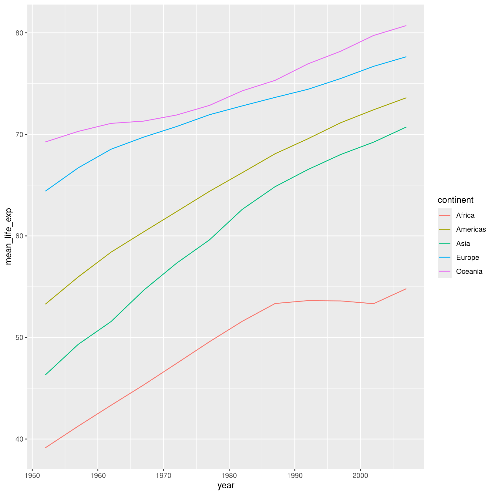
The geom_line() geometry connects the data points across
time in the appropriate way. Sure enough, we see what we noticed from
looking at the summarized table. This is a good example of needing to
summarize the data before plotting, rather than altering the data at
runtime, as we did when we divided the population by 1,000,000.
Let’s pull this plot back a bit and try to plot all the countries at
the same time, rather than an average. Let’s try altering the code above
and replace geom_point() with geom_line():
ggplot(data = gm) +
aes(x = year, y = lifeExp, color = continent) +
geom_line()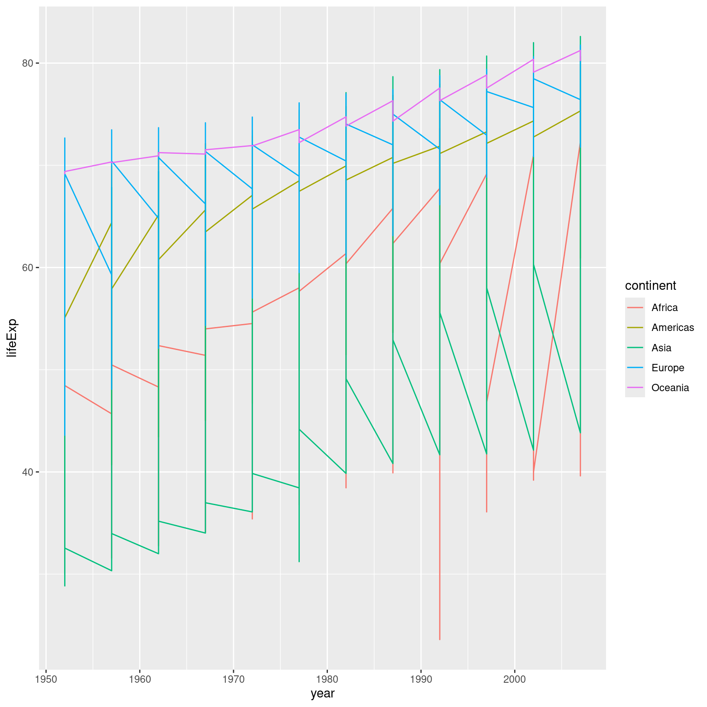
This is definitely not the right thing. We got a line for each
continent, but we want a line for each country. To tell
ggplot to connect the values for each country,
we use the group aesthetic:
ggplot(data = gm) +
aes(x = year, y = lifeExp, color = continent, group = country) +
geom_line()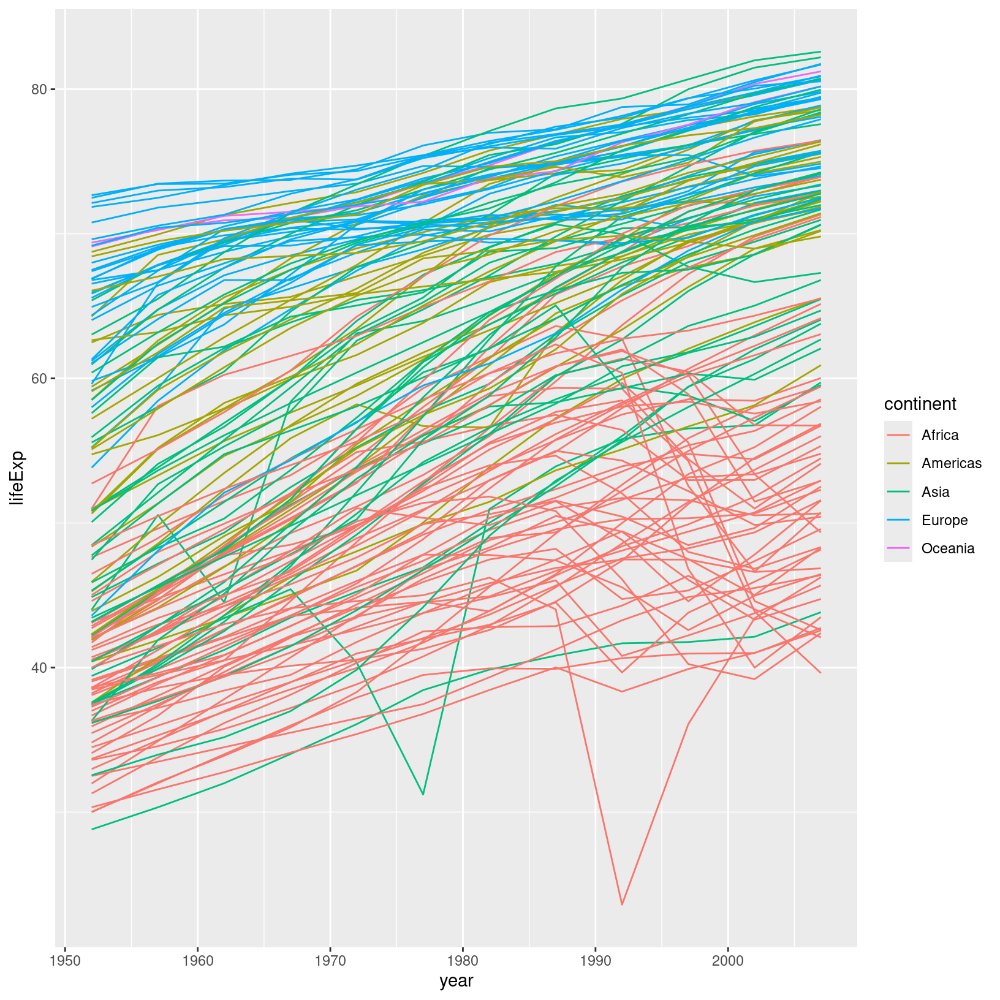
And now we see each country plotted as its own line so we can see the overall trend, as well as the deviations from the trend.
Checkpoint
Geometries for categories
The geom_point and geom_line geometries are
designed to display numeric values on the x and y axes. Often data has
discrete variables (continent or country)
where something like a box plot is more appropriate. Let’s revisit our
gm97 data to create a box plot with the continent on the x
axis and the life expectancy on the y-axis.
ggplot(data = gm97) + aes(x = continent, y = lifeExp) + geom_boxplot()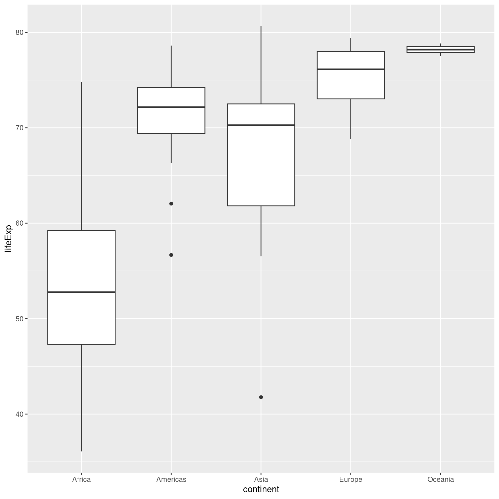
This makes comparing the range and spread of values across groups easier. The median of the data is displayed, as is the 25% and 75%-iles and any outliers.
Checkpoint
Factors
In the above box plots it’s perfectly acceptable to have the
continents listed in alphabetical order, which is the default when
plotting categorical data in ggplot2. Imagine, however,
that we want a box plot with months on the x-axis and some data on the
y-axis. It wouldn’t be appropriate to plot the months in alphabetical
order. Fortunately there is a data type in R called a
factor which stores categorical data and enables us to
specify the order of the “levels” or categories.
We know that our data has a continent column, and we saw
before that there were only 5 unique values in this column. This is a
perfect candidate to introduce the idea of a factor. Let’s
mutate() the gm97 data and add a factor
version of the continent column.
First, let’s look at ?factor. It takes a character
vector (exactly what the continent column is), and an
optional levels character vector which dictates the
categories and their desired order.
gm_factor = gm97 %>%
mutate(continent_factor = factor(continent, levels = c('Oceania', 'Africa', 'Asia', 'Americas', 'Europe')))Let’s take a look at the new object and see how it’s different.
gm_factor# A tibble: 142 × 7
country year pop continent lifeExp gdpPercap continent_factor
<chr> <dbl> <dbl> <chr> <dbl> <dbl> <fct>
1 Afghanistan 1997 22227415 Asia 41.8 635. Asia
2 Albania 1997 3428038 Europe 73.0 3193. Europe
3 Algeria 1997 29072015 Africa 69.2 4797. Africa
4 Angola 1997 9875024 Africa 41.0 2277. Africa
5 Argentina 1997 36203463 Americas 73.3 10967. Americas
6 Australia 1997 18565243 Oceania 78.8 26998. Oceania
7 Austria 1997 8069876 Europe 77.5 29096. Europe
8 Bahrain 1997 598561 Asia 73.9 20292. Asia
9 Bangladesh 1997 123315288 Asia 59.4 973. Asia
10 Belgium 1997 10199787 Europe 77.5 27561. Europe
# ℹ 132 more rowsNote that the new column has type fct (factor) and the
old has chr (character). That’s a good start. Let’s look at
the head of both columns.
head(gm_factor$continent)[1] "Asia" "Europe" "Africa" "Africa" "Americas" "Oceania" head(gm_factor$continent_factor)[1] Asia Europe Africa Africa Americas Oceania
Levels: Oceania Africa Asia Americas EuropeCheckpoint
Notice that for the factor column we get the same output, but with
additional information about the levels, and the ordering
is exactly what we specified. Now let’s see the effect on a plot similar
to the boxplot we already created above.
ggplot(data = gm_factor) + aes(x = continent_factor, y = lifeExp) + geom_boxplot()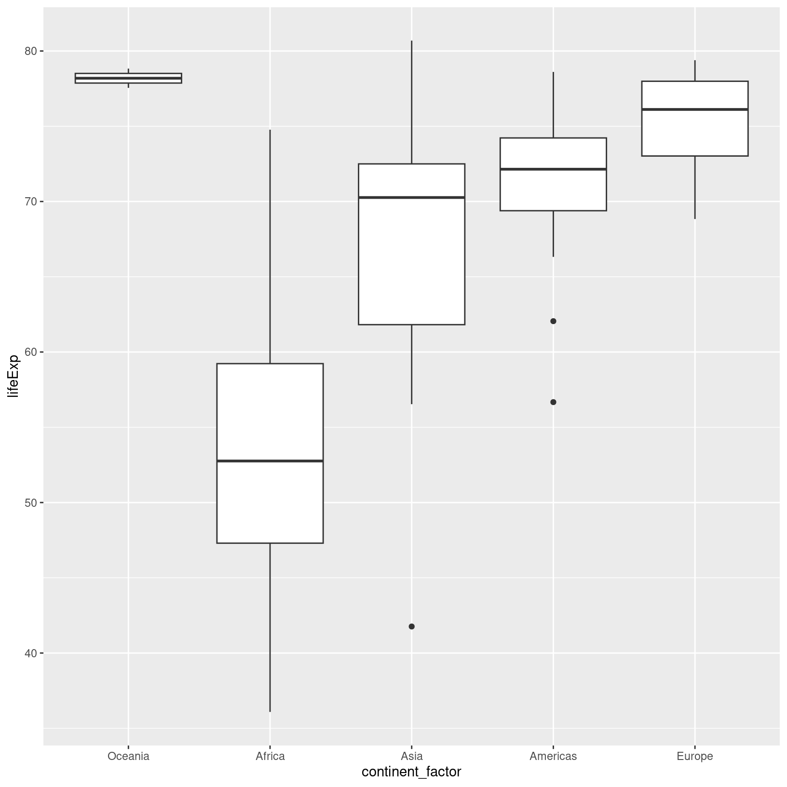
Compare this to the plot we saw with the continent
column, where the order was alphabetical. In the RNA-seq Demystified
Workshop we will also see how factors and the order of their levels
affect the tests for differential expression.
Checkpoint
Layers (optional)
To get a sense for how the data are distributed in the box plot, we
could add a layer with geom_point() in
addition to geom_boxplot().
ggplot(data = gm97) +
aes(x = continent, y = lifeExp) +
geom_boxplot() +
geom_point()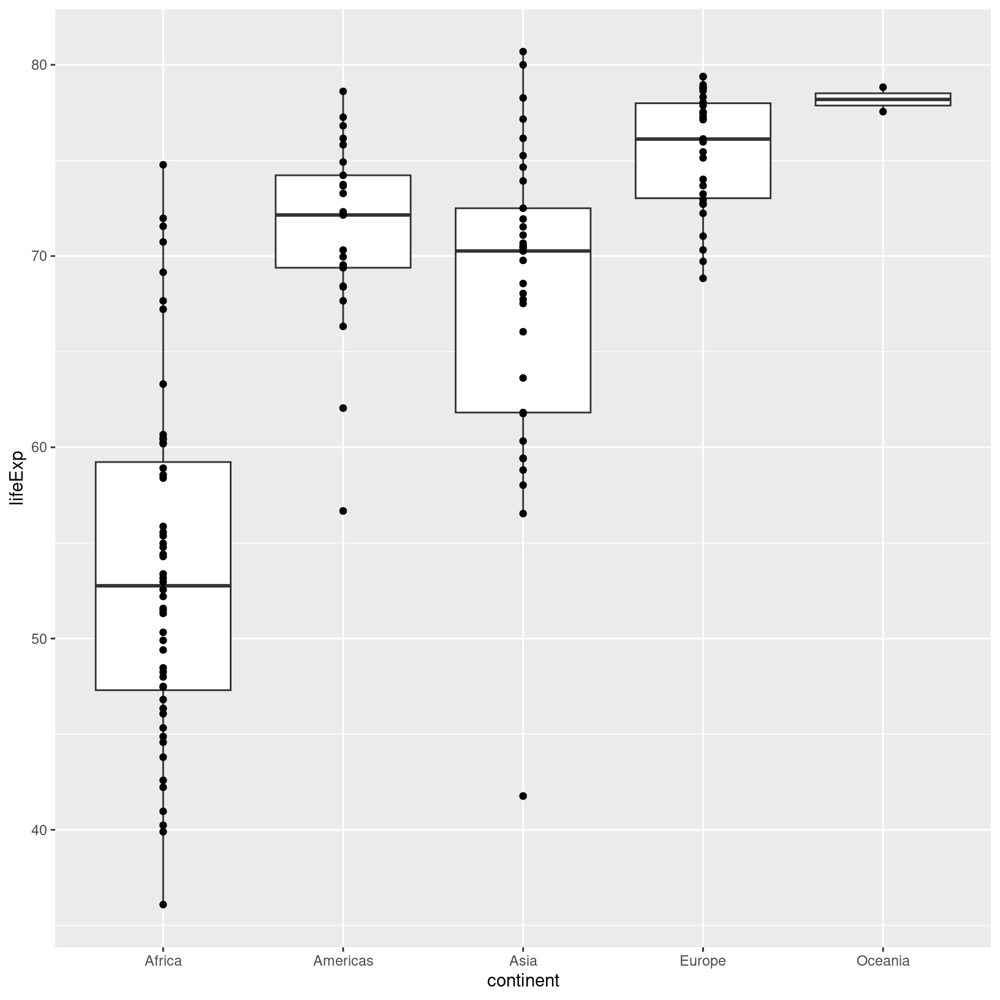
The points are stacking on top of one another, and it can be hard to
tell, for a value of lifeExp, if more than one data point
is there. We can fix this by “jittering” the points, with
geom_jitter().
ggplot(data = gm97) +
aes(x = continent, y = lifeExp) +
geom_boxplot() +
geom_jitter()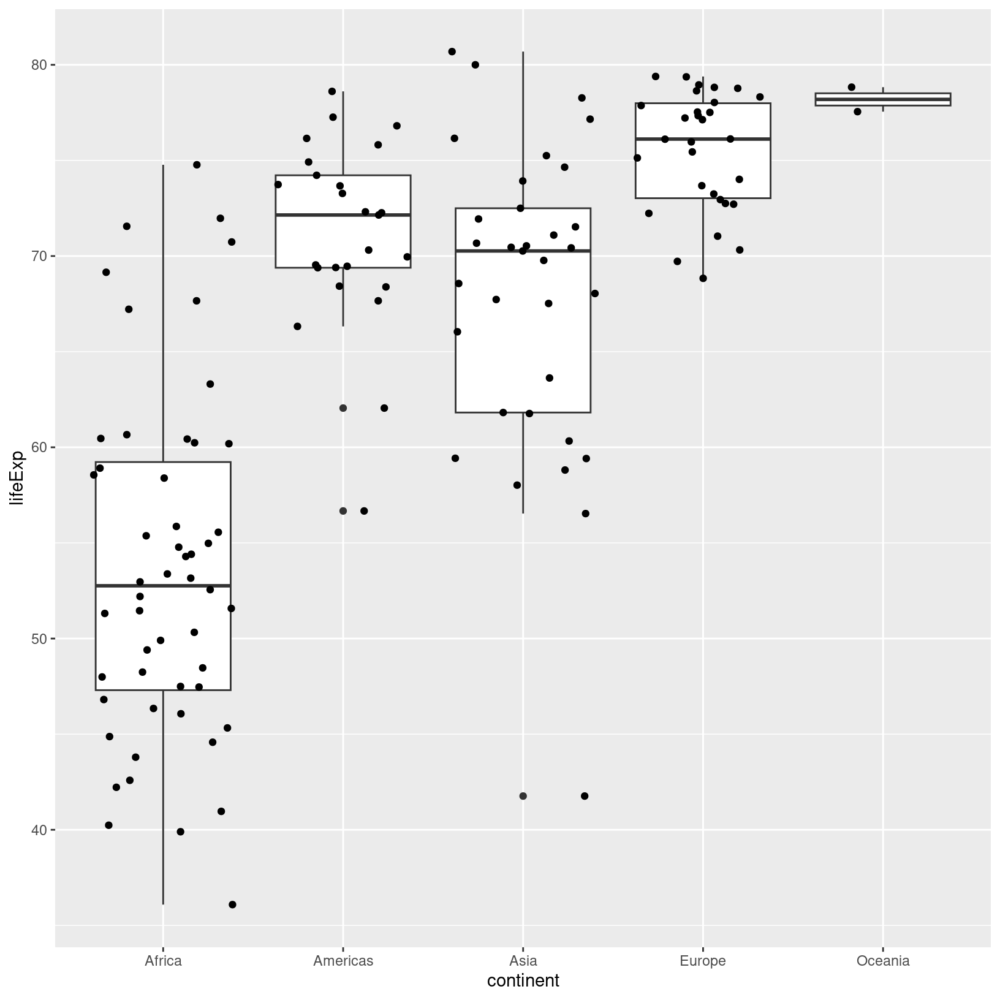
Within a column, the horizontal position doesn’t have meaning, and is
meant to visually separate points of the same value. However, it feels
like the jitter is a bit wide, causing the boundaries between the
continents to be unclear. If we look at the help
?geom_jitter we’d see a width parameter, which
controls how wide to allow the jitter.
ggplot(data = gm97) +
aes(x = continent, y = lifeExp) +
geom_boxplot() +
geom_jitter(width = 0.15)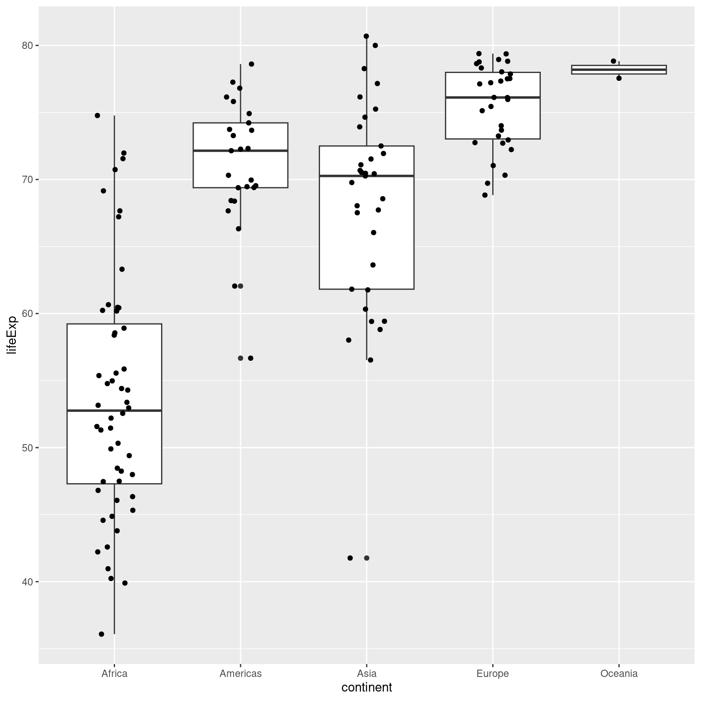
It may take some iterations of the width parameter to
get things where we want them. This is pretty common in
ggplot2. Note that the word “layer” also means that the
layers appear in a particular order, for example, if we swap the
geom_boxplot() and geom_jitter() we see that
the points are obscured.
ggplot(data = gm97) +
aes(x = continent, y = lifeExp) +
geom_jitter(width = 0.15) +
geom_boxplot()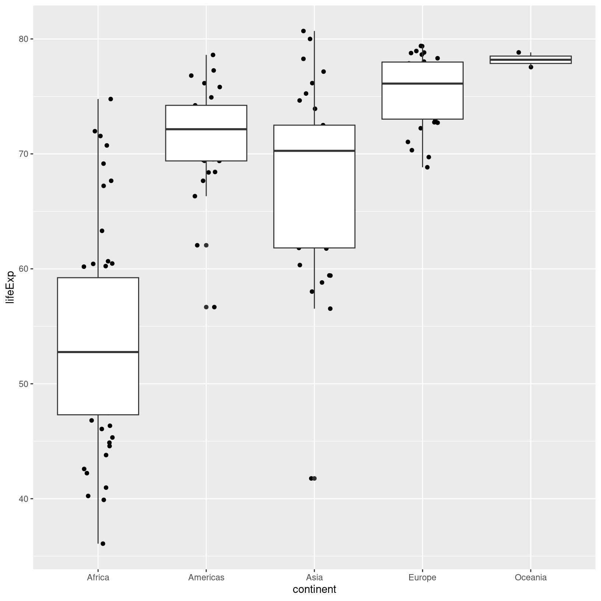
Using the width parameter in geom_jitter(),
we saw that it was possible to change aspects of a layer without
altering other layers. This carries into the aesthetics too. For
example, if we wanted to add a size aesthetic using the
pop to only the geom_jitter() layer:
ggplot(data = gm97) +
aes(x = continent, y = lifeExp) +
geom_boxplot() +
geom_jitter(aes(size = pop), width = 0.3)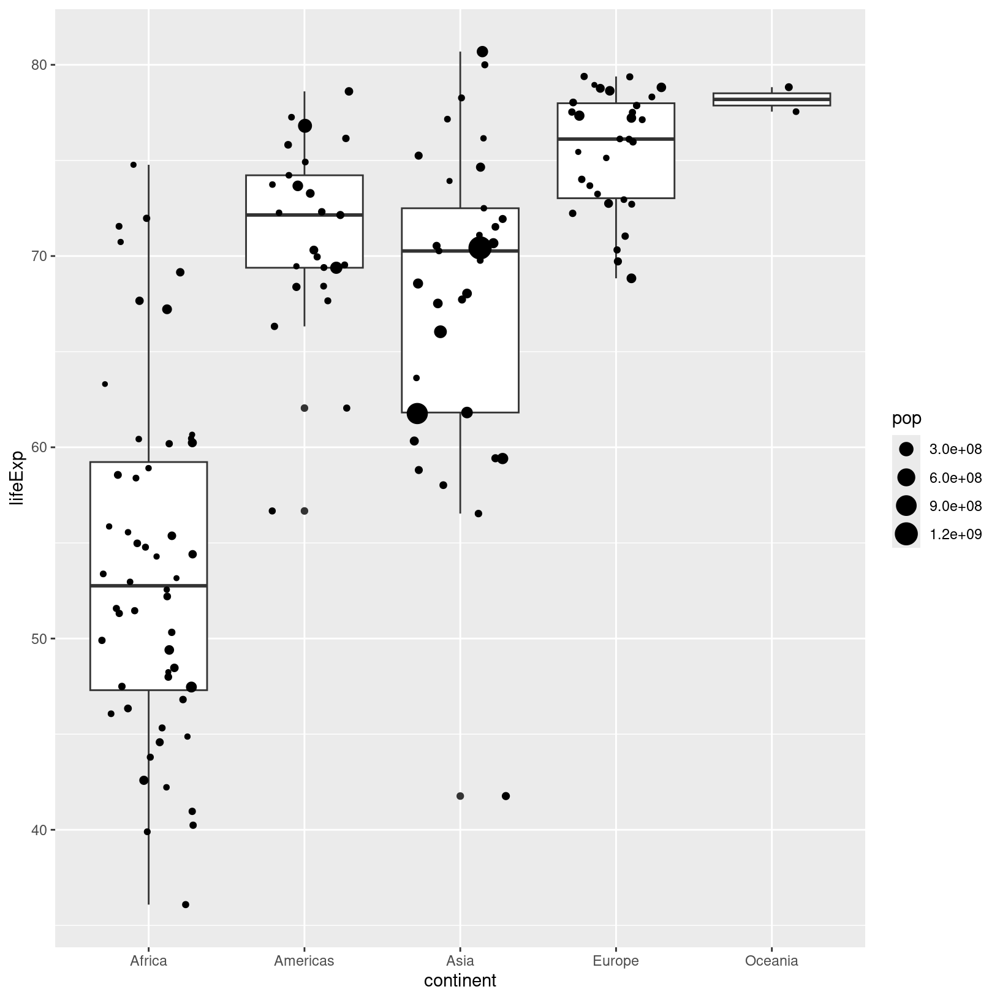
Checkpoint
Color and Fill (optional)
Let’s have a look at our jittered boxplot and explore
color and fill. When a color is assigned
directly, we use the name of the color in quotes, as in ‘pink’, and we
don’t need to use the aes() function.
ggplot(data = gm97) +
aes(x = continent, y = lifeExp) +
geom_boxplot(color = 'pink') +
geom_jitter(aes(size = pop), width = 0.3)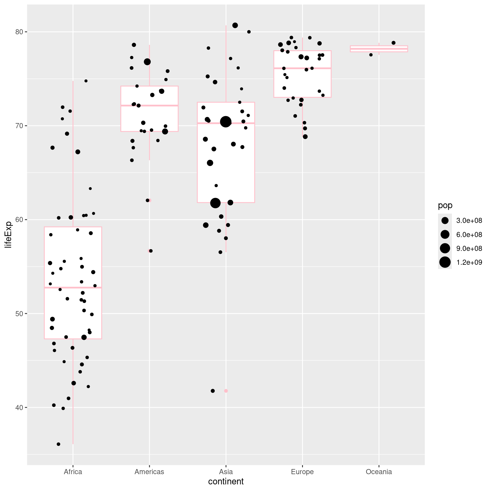
We could add a different color to the points in the
geom_jitter(), and we would do it outside of the
aes() if we wanted them to be the same.
ggplot(data = gm97) +
aes(x = continent, y = lifeExp) +
geom_boxplot(color = 'pink') +
geom_jitter(aes(size = pop), color = 'blue', width = 0.3)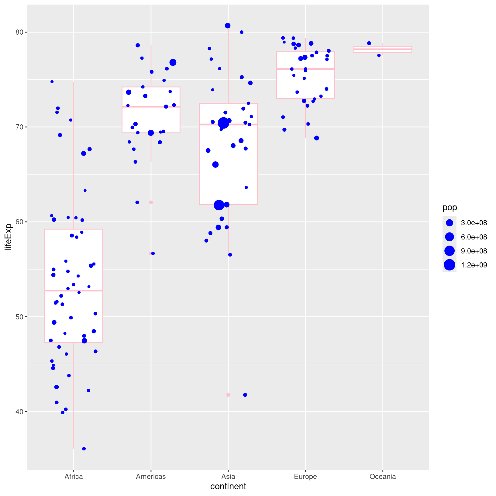
Notice that color changed the outline of the
geom_boxplot(). We would use fill if we wanted
to change the inside color of the box plot.
ggplot(data = gm97) +
aes(x = continent, y = lifeExp) +
geom_boxplot(color = 'pink', fill = 'green') +
geom_jitter(aes(size = pop), color = 'blue', width = 0.3)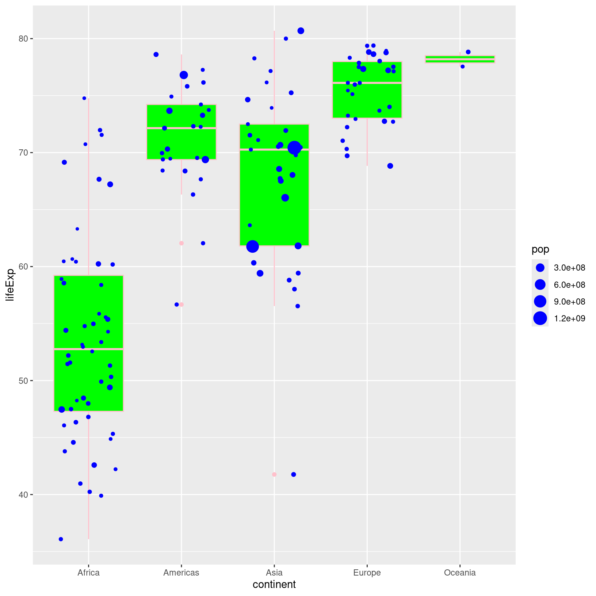
We probably won’t publish this particular plot, as beautiful as it is.
We have already seen in other plots that we can link
color to an attribute of our data. We can do the same with
fill, but we do it inside of the aes()
function.
ggplot(data = gm97) +
aes(x = continent, y = lifeExp) +
geom_boxplot(aes(fill = continent)) +
geom_jitter(aes(size = pop), width = 0.3)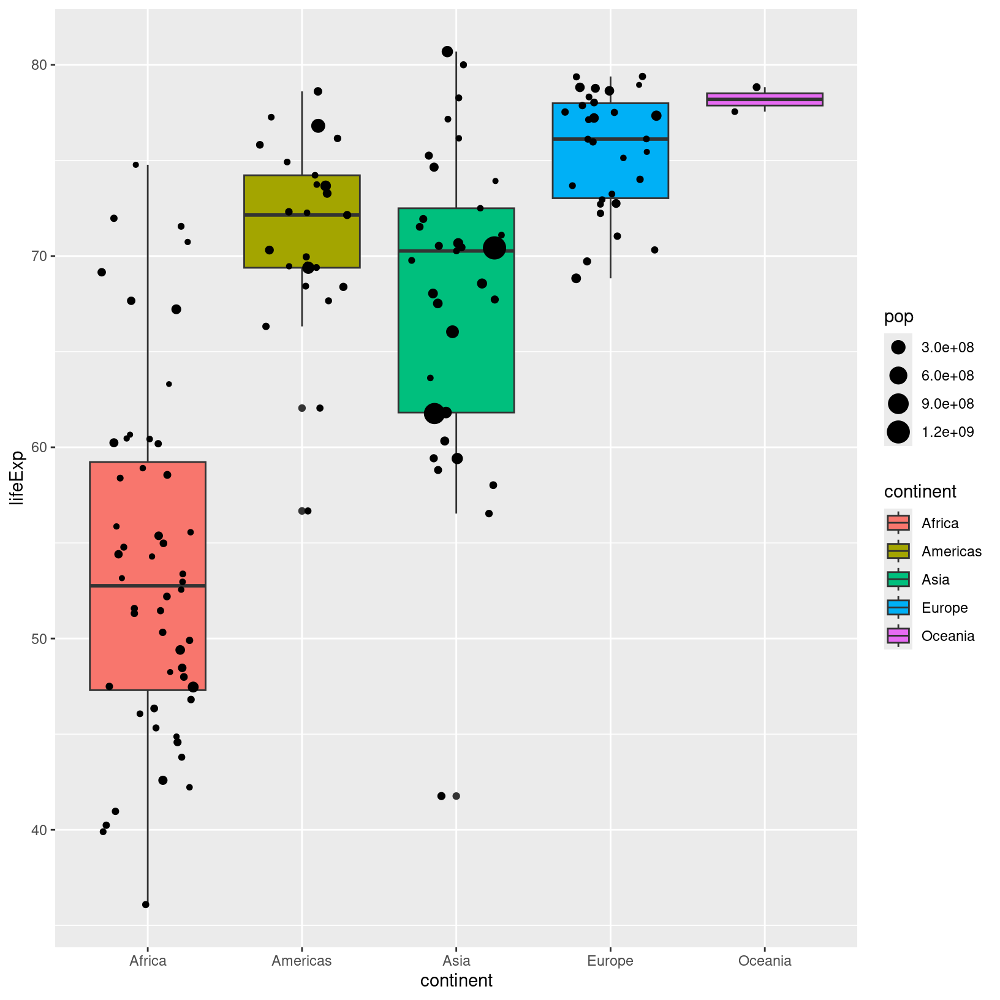
Checkpoint
Single-variable plots
Our very first plot involved two variables, but it’s often helpful to
plot a single variable’s values as a histogram to understand its
distribution. Here the geometries geom_histogram() and
geom_density() can help us. Let’s take a look at the
histogram for lifeExp.
ggplot(data = gm97) +
aes(x = lifeExp) +
geom_histogram()`stat_bin()` using `bins = 30`. Pick better value with `binwidth`.Here there is a message displayed that the default number of bins is
30 from geom_histogram(), but that may not be appropriate
for all data. There are two ways we can change the bins the geometry
uses to count, bins which fixes the number of bins, and
binwidth which fixes the intervals in which values are
counted. Let’s change the number of bins to 20.
ggplot(data = gm97) +
aes(x = lifeExp) +
geom_histogram(bins = 20)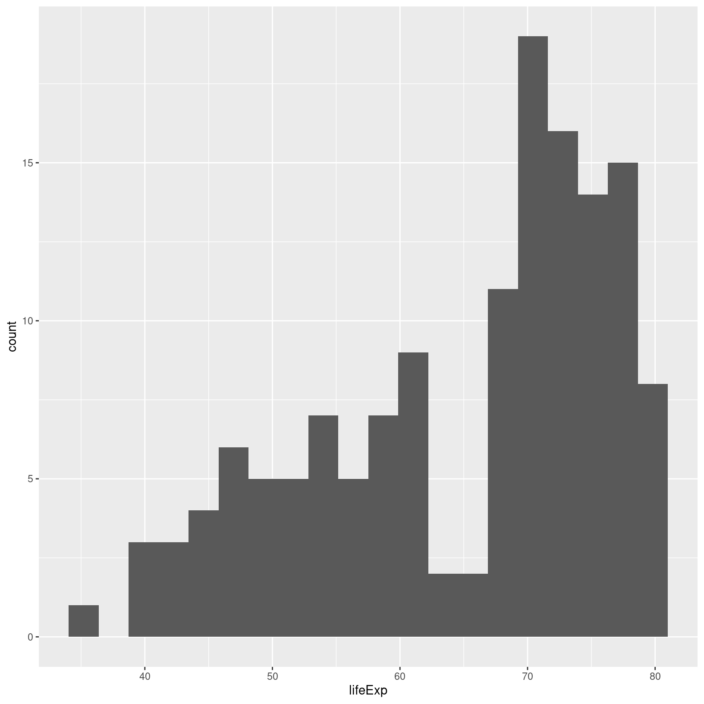
We can see there are fewer bins in this plot.
Checkpoint
Facets
We have used the aesthetics aes() to map data to
color, fill, etc. and distinguish differences
between the subgroups. Faceting is another technique to plot subgroups
in their own panels of a single plot, also helping to distinguish
differences between subgroups. We started off a relatively simple plot
of GDP per capita versus life expectancy, and later colored it by
continent. But let’s use facets to split the continents into their own
sub-plots.
ggplot(gm97) +
aes(x = gdpPercap, y = lifeExp) +
geom_point() +
facet_wrap(vars(continent))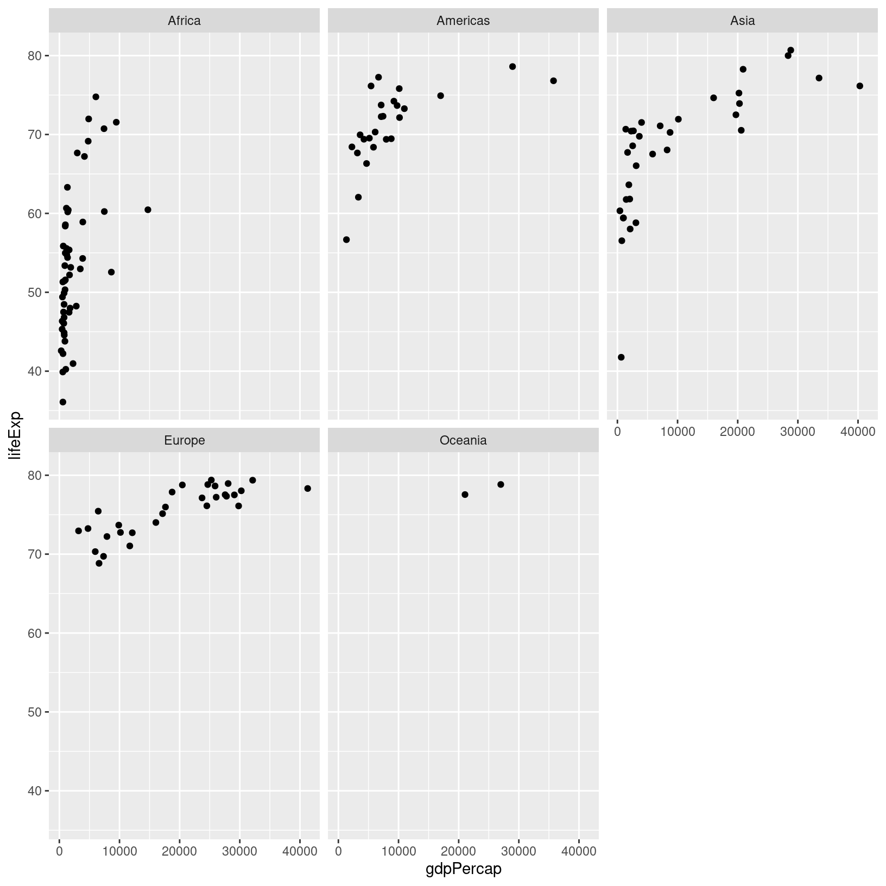
Importantly, we had to use the helper function vars() to
tell facet_wrap() what the column name to use in the facet.
The details about why vars() is needed are somewhat
nuanced, so we won’t get into them, but know that some
ggplot2 and dplyr functions may require the
use of vars() when giving column names, whereas in the
aes() function we don’t need the vars().
It might be easier to compare differences in the sub-plots if they
were arranged by row or by column, rather than wrapping them in a grid.
Have a look at the help for ?facet_grid(). There are
rows and cols arguments that will display the
facets as rows or columns.
ggplot(gm97) +
aes(x = gdpPercap, y = lifeExp) +
geom_point() +
facet_grid(rows = vars(continent))Now there is only one x-axis, and multiple y-axes. Here the scale is
the same for all the y-axes to make them comparable, but there are
parameters of facet_grid() that allow the scales to change
depending on the data within the facet itself if that’s more
appropriate.
Checkpoint
Saving plots
While it’s great to keep the code that created the plot in an R
script, it’s also great to save it as an image so you can share it with
people that don’t use R, or don’t want to run all your code to generate
the plot. Since we’re saving all our steps in a script, we’ll make use
of the ggsave() function. Let’s start by taking a look at
the help:
?ggsaveNote that it defaults to saving the last displayed plot. also note
that there are parameters for the dimensions, the units of the
dimensions, and the resolution. Let’s run a very basic version of
ggsave().
ggsave('first_saved_plot.png', height = 6, width = 6, dpi = 300)Checkpoint
We can then navigate to the plot and click to open it in the File
pane. Note that R Studio Server let’s you easily download any file by
clicking any number of checkboxes for the files and then clicking “More”
and “Export”. In the previous command we’ve used the .png
extension, so that ggsave() knows to create a PNG, but we
could have also used .jpeg, .pdf,
.eps, etc to create an appropriate file output. See the
documentation for ggsave() for supported file formats, and
note that this is an easy way to save multiple formats and resolutions
depending on whether you want to quickly share with a collaborator, or
share with a journal for publication.
We just learned how to save plots as files, but we can also save plots as objects in R. This is helpful for when we want to revisit a plot or make changes to it without having to re-type a bunch of code.
scatter_plot = ggplot(data = gm97) +
aes(x = gdpPercap, y = lifeExp, color = continent, size = pop/1000000) +
geom_point() +
scale_color_brewer(palette = 'Set1') +
labs(x = 'GDP Per Capita', y = 'Life Expectancy', color = 'Continent', size = 'Population (in millions)',
title = 'Do people in wealthier countries live longer?',
caption = 'Figure: GDP per capita and life expectancy are positively correlated, while population is not.')Notice nothing happens, unlike when we ran the code without saving it as an object. If we want to see the plot again, we have to execute the name of the object:
scatter_plot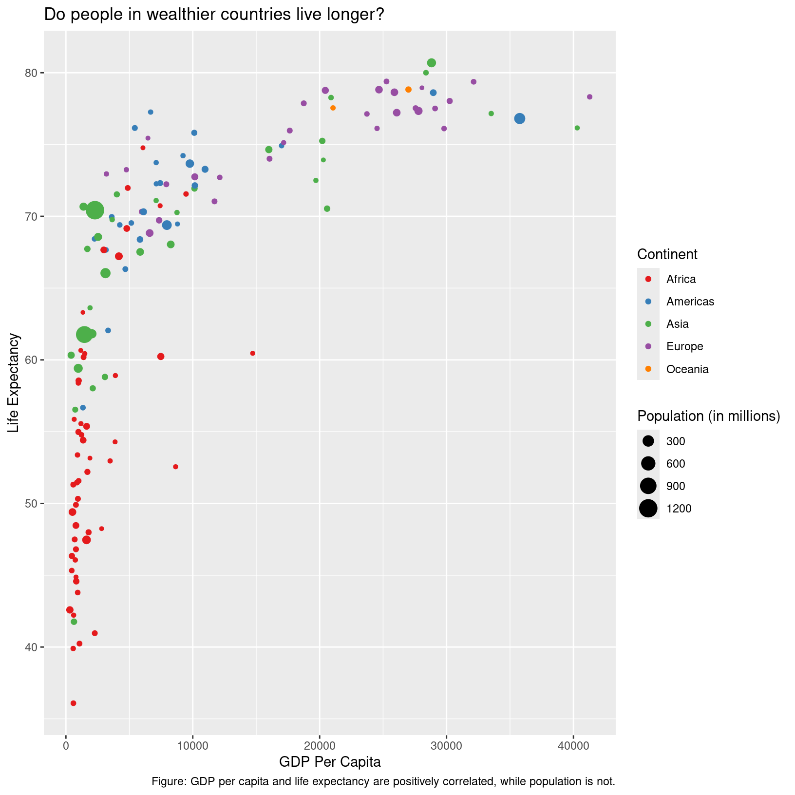
Checkpoint
Customizing plots
Now that we have a nice plot saved as an object, it’s a good time to explore different customizations we can add to the plot. Let’s start with changing the theme.
scatter_plot + theme_bw()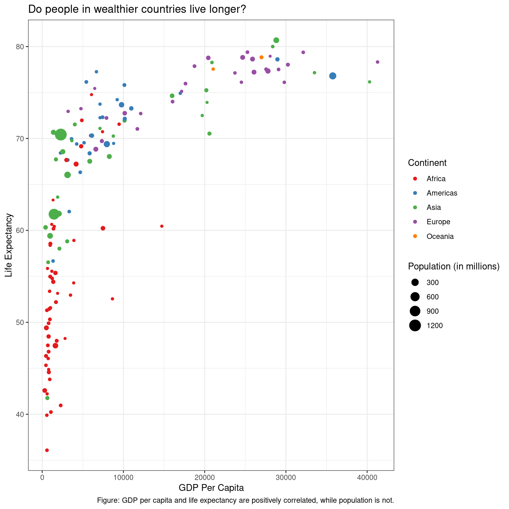
What did this do? It changed the background color, added a border
around the plot area, and perhaps some other things that are too subtle
to notice. There are many themes available as presets (see this
link), but we can also more finely control aspects of our plot with
the theme() function (see
documentation here or do ?theme).
Change font attributes
We can use the text argument of theme() to
change the size of all the fonts in the plot.
scatter_plot + theme(text = element_text(size = 16))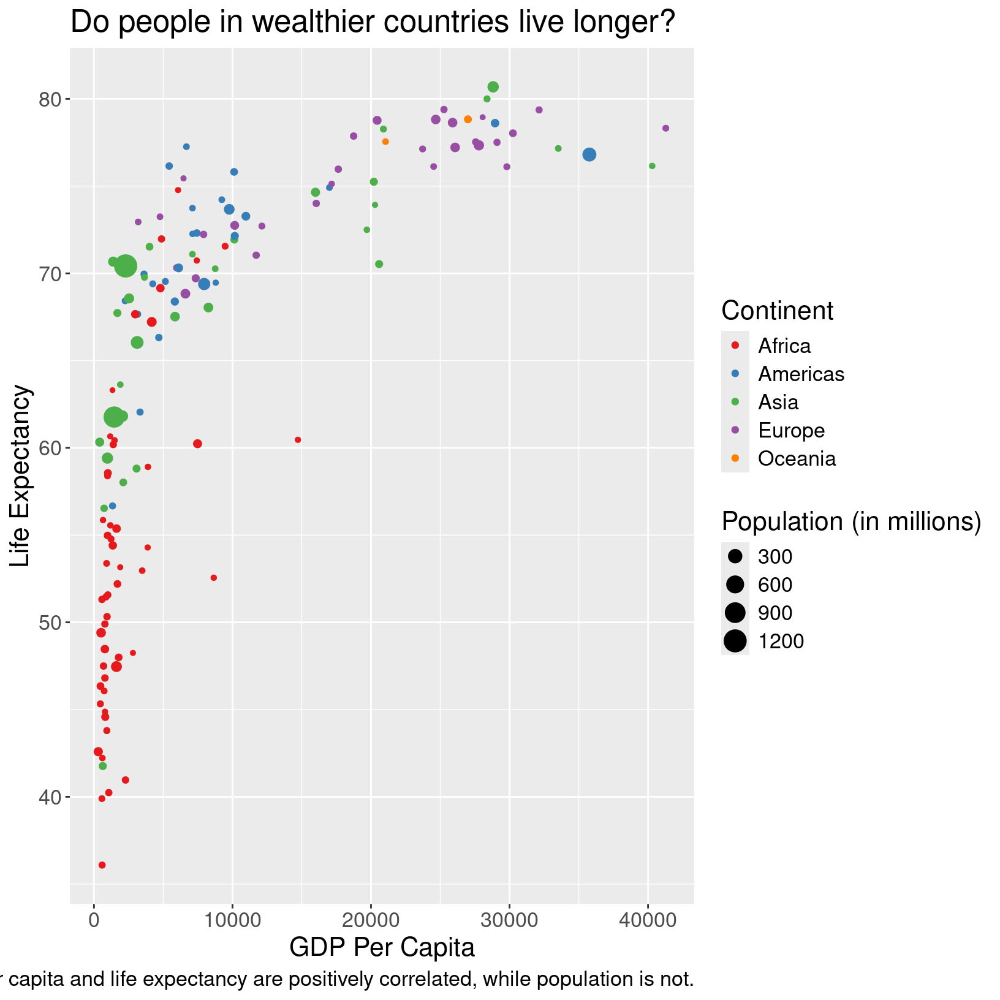
We could also rotate the axis labels using either the
axis.text.x or axis.text.y parameter of
theme(), and then the angle,
vjust, and hjust parameters of
element_text().
scatter_plot + theme(axis.text.x = element_text(angle = 90))Here the axis labels aren’t centered on the ticks, and seem to be
center justified. We use the vjust and hjust
parameters to fix that. This is a case where an example from searching
the internet was helpful.
scatter_plot + theme(axis.text.x = element_text(angle = 90, vjust = 0.5, hjust = 1))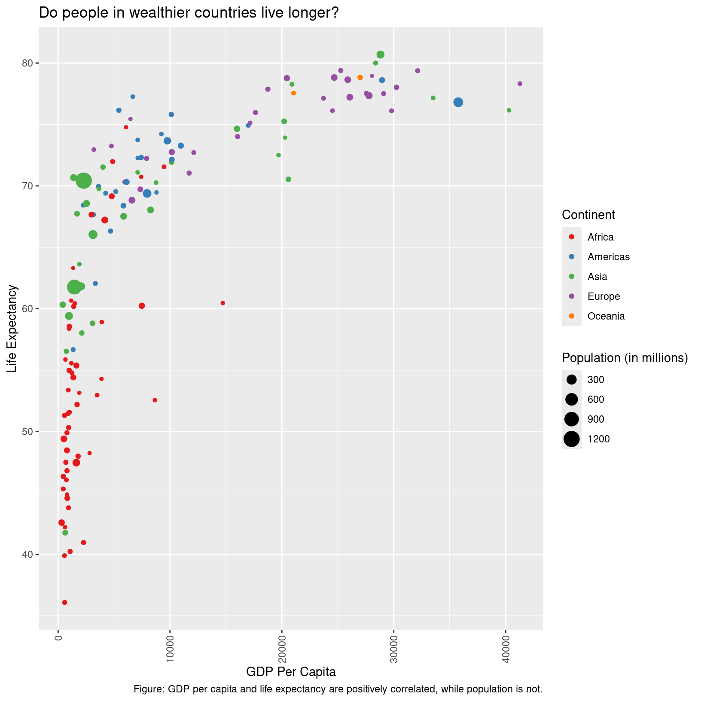
Checkpoint
Labeling points (optional)
In the scatterplot, we might want to highlight certain countries,
such as Brazil, China, India, and the United States. There is a very
nice add-on package called ggrepel.
In particular, if we look at the example for how
to hide some of the labels, we’ll get a sense for how to write code
to highlight these countries.
It seems like we’ll need to add a new column to gm97
that has empty labels ('') for the countries other than
Brazil, China, India, and the United States.
library(ggrepel)
gm97_labels = gm97 %>%
mutate(label = ifelse(country %in% c('Brazil', 'China', 'India', 'United States'), country, ''))What have we done here? We’ve used the mutate() function
to create a new column called label, and the criteria for the entries
are, if the entry from the country column is in the set
c('Brazil', 'China', 'India', 'United Staets'), then pass
on the country name, otherwise give it an empty string ''.
How can we be sure that we’ve done the right thing?
gm97_labels# A tibble: 142 × 7
country year pop continent lifeExp gdpPercap label
<chr> <dbl> <dbl> <chr> <dbl> <dbl> <chr>
1 Afghanistan 1997 22227415 Asia 41.8 635. ""
2 Albania 1997 3428038 Europe 73.0 3193. ""
3 Algeria 1997 29072015 Africa 69.2 4797. ""
4 Angola 1997 9875024 Africa 41.0 2277. ""
5 Argentina 1997 36203463 Americas 73.3 10967. ""
6 Australia 1997 18565243 Oceania 78.8 26998. ""
7 Austria 1997 8069876 Europe 77.5 29096. ""
8 Bahrain 1997 598561 Asia 73.9 20292. ""
9 Bangladesh 1997 123315288 Asia 59.4 973. ""
10 Belgium 1997 10199787 Europe 77.5 27561. ""
# ℹ 132 more rowsLooks like the labels in the preview are correct, how can we check that the countries we wanted are correct?
gm97_labels %>% filter(label != '')# A tibble: 4 × 7
country year pop continent lifeExp gdpPercap label
<chr> <dbl> <dbl> <chr> <dbl> <dbl> <chr>
1 Brazil 1997 168546719 Americas 69.4 7958. Brazil
2 China 1997 1230075000 Asia 70.4 2289. China
3 India 1997 959000000 Asia 61.8 1459. India
4 United States 1997 272911760 Americas 76.8 35767. United StatesSo now let’s take a cue from the example code and incorporate it into our original code:
ggplot(data = gm97_labels) +
aes(x = gdpPercap, y = lifeExp, color = continent, size = pop/1000000, label = label) +
geom_point() +
geom_text_repel(box.padding = 0.5, max.overlaps = Inf) +
scale_color_brewer(palette = 'Set1') +
labs(x = 'GDP Per Capita', y = 'Life Expectancy', color = 'Continent', size = 'Population (in millions)',
title = 'Do people in wealthier countries live longer?',
caption = 'Figure: GDP per capita and life expectancy are positively correlated, while population is not.')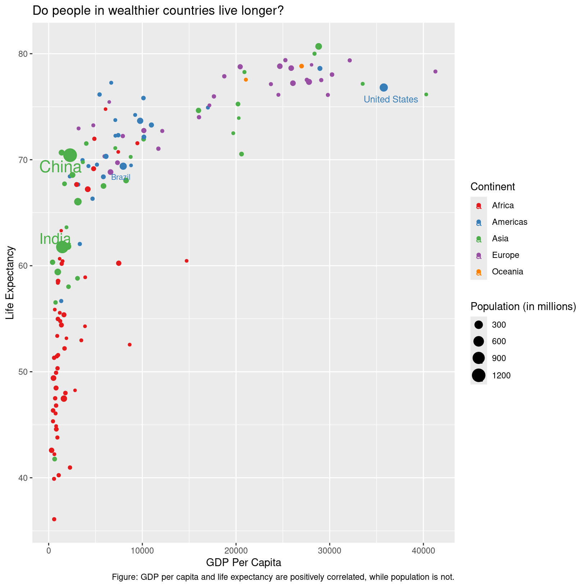
Checkpoint
Notice that the size of the label is actually inherited from the size
aesthetic. This is an example of aesthetics being inherited by default.
We could prevent this inheritance by moving the color and
size aesthetic mappings into geom_point() so
that they only apply to that layer:
ggplot(data = gm97_labels) +
aes(x = gdpPercap, y = lifeExp, label = label) +
geom_point(aes(color = continent, size = pop/1000000)) +
geom_text_repel(box.padding = 0.5, max.overlaps = Inf) +
scale_color_brewer(palette = 'Set1') +
labs(x = 'GDP Per Capita', y = 'Life Expectancy', color = 'Continent', size = 'Population (in millions)',
title = 'Do people in wealthier countries live longer?',
caption = 'Figure: GDP per capita and life expectancy are positively correlated, while population is not.')Objectives
- Learn the essential parts of the
ggplot2“grammar of graphics”:- Map variables from the data to aesthetics (x, y, color, fill, size,
etc.) via
aes(). - Plot those mappings with geometries via
geom_*(). - Adjust numeric and categorical scales via
scale_*(). - Use a variable to visually stratify data via
facet_*().
- Map variables from the data to aesthetics (x, y, color, fill, size,
etc.) via
- Learn how to customize plots by:
- Changing color and fill with the RColorBrewer package.
- Altering text and formatting of axis labels and legends.
Exercise
In a previous exercise we created a plot showing the trend of life expectancy across all countries over time, colored by the continent. The following code generates a similar plot but for the GDP per capita.
ggplot(data = gm, aes(x = year, y = gdpPercap, color = continent, group = country)) + geom_line() + theme_bw() + labs( title = 'GDP per Capita 1952 - 2007', x = 'Year', y = 'GDP per Capita')Is this plot clear? Might it be improved by splitting up the continents into their own plots? Below is a plot which pulls apart the trends on the different continents, while still plotting each country individually. Try to write the code that would generate it.
This plot generates a lot of questions. For example:
- What is the Asian country with the very high GDP per capita?
- What are the two countries that are outliers in the Americas?
- What two African countries seemed to experience strong GDP per capita growth through 1980, only to drop off?
- What two European countries overtake the long-leading GDP per capita country in 2007?
All of these questions are suggested by looking at the plot, but we can answer them with the
dplyrfunctions we’ve learned.
- To find the Asian country of interest, we could simply find the country with the highest GDP per capita in 1952.
gm %>% filter(year == 1952) %>% arrange(desc(gdpPercap))# A tibble: 142 × 6 country year pop continent lifeExp gdpPercap <chr> <dbl> <dbl> <chr> <dbl> <dbl> 1 Kuwait 1952 160000 Asia 55.6 108382. 2 Switzerland 1952 4815000 Europe 69.6 14734. 3 United States 1952 157553000 Americas 68.4 13990. 4 Canada 1952 14785584 Americas 68.8 11367. 5 New Zealand 1952 1994794 Oceania 69.4 10557. 6 Norway 1952 3327728 Europe 72.7 10095. 7 Australia 1952 8691212 Oceania 69.1 10040. 8 United Kingdom 1952 50430000 Europe 69.2 9980. 9 Bahrain 1952 120447 Asia 50.9 9867. 10 Denmark 1952 4334000 Europe 70.8 9692. # ℹ 132 more rows
- We can actually use a similar tactic for this question, but we can pick any year based on the plot, and we must filter on the correct continent. Then we can observe the top two rows.
gm %>% filter(year == 2007 & continent == 'Americas') %>% arrange(desc(gdpPercap))# A tibble: 25 × 6 country year pop continent lifeExp gdpPercap <chr> <dbl> <dbl> <chr> <dbl> <dbl> 1 United States 2007 301139947 Americas 78.2 42952. 2 Canada 2007 33390141 Americas 80.7 36319. 3 Puerto Rico 2007 3942491 Americas 78.7 19329. 4 Trinidad and Tobago 2007 1056608 Americas 69.8 18009. 5 Chile 2007 16284741 Americas 78.6 13172. 6 Argentina 2007 40301927 Americas 75.3 12779. 7 Mexico 2007 108700891 Americas 76.2 11978. 8 Venezuela 2007 26084662 Americas 73.7 11416. 9 Uruguay 2007 3447496 Americas 76.4 10611. 10 Panama 2007 3242173 Americas 75.5 9809. # ℹ 15 more rows
- We can use a similar approach as 2, but filter on the African countries, and look at the top two results.
gm %>% filter(year == 1977 & continent == 'Africa') %>% arrange(desc(gdpPercap))# A tibble: 52 × 6 country year pop continent lifeExp gdpPercap <chr> <dbl> <dbl> <chr> <dbl> <dbl> 1 Libya 1977 2721783 Africa 57.4 21951. 2 Gabon 1977 706367 Africa 52.8 21746. 3 South Africa 1977 27129932 Africa 55.5 8029. 4 Algeria 1977 17152804 Africa 58.0 4910. 5 Reunion 1977 492095 Africa 67.1 4320. 6 Namibia 1977 977026 Africa 56.4 3876. 7 Swaziland 1977 551425 Africa 52.5 3781. 8 Mauritius 1977 913025 Africa 64.9 3711. 9 Congo Rep. 1977 1536769 Africa 55.6 3259. 10 Botswana 1977 781472 Africa 59.3 3215. # ℹ 42 more rows
- And again, but look at the top three results.
gm %>% filter(year == 2007 & continent == 'Europe') %>% arrange(desc(gdpPercap))# A tibble: 30 × 6 country year pop continent lifeExp gdpPercap <chr> <dbl> <dbl> <chr> <dbl> <dbl> 1 Norway 2007 4627926 Europe 80.2 49357. 2 Ireland 2007 4109086 Europe 78.9 40676. 3 Switzerland 2007 7554661 Europe 81.7 37506. 4 Netherlands 2007 16570613 Europe 79.8 36798. 5 Iceland 2007 301931 Europe 81.8 36181. 6 Austria 2007 8199783 Europe 79.8 36126. 7 Denmark 2007 5468120 Europe 78.3 35278. 8 Sweden 2007 9031088 Europe 80.9 33860. 9 Belgium 2007 10392226 Europe 79.4 33693. 10 Finland 2007 5238460 Europe 79.3 33207. # ℹ 20 more rows
| Previous lesson | Top of this lesson | Wrap up |
|---|